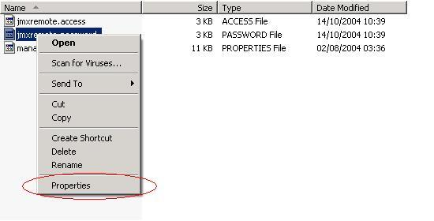
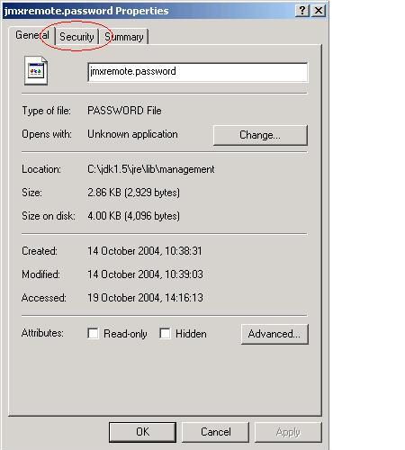
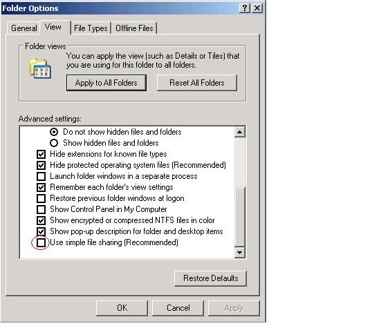
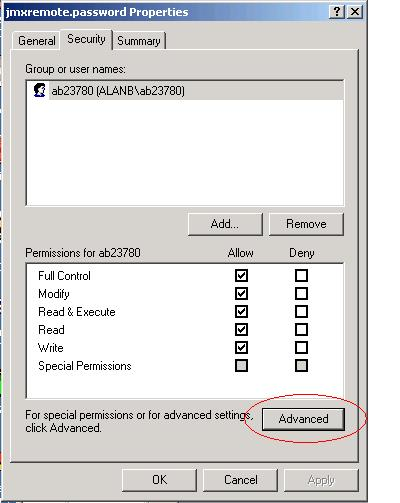
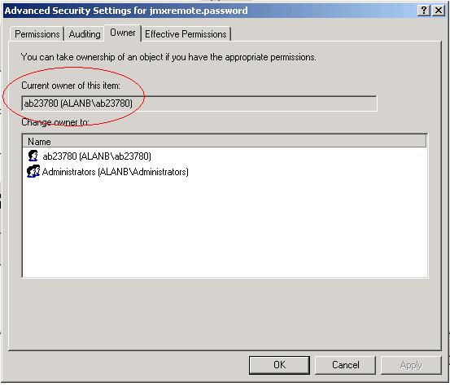
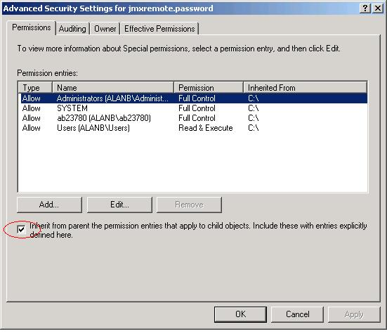
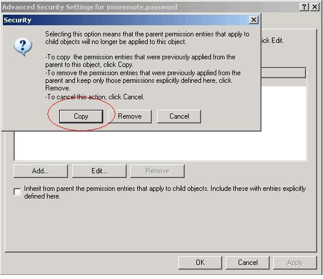
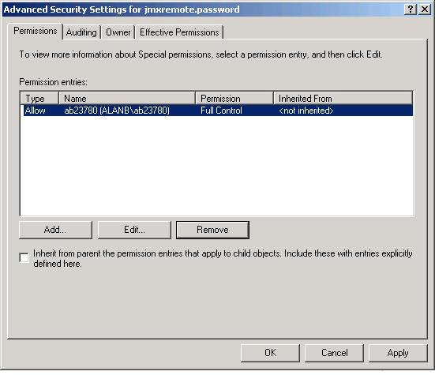

For remote monitoring and management, it uses the password and access files to control security. Details are documented in Using Password and Access Files.
Below describes how to set the file permissions of the password file on a Windows system using NTFS so that only the owner has read and write permissions on this file. If the file system is FAT32, the file system security is not supported and the password file cannot be secured.
jmxremote.password file and
select the Properties option.


Note: If you are on Windows XP and the computer is not part of a domain, then the Security tab may be missing. To reveal the Security tab, do the following:

When you restart Windows Explorer, the Security tab should now be visible.



At this point it will prompt you to ask if the inherited permissions should be copied from the parent or removed. Press the Copy button:
Then remove all permission entries that grant access to users or groups other than the file owner by clicking the user or group and press the Remove button for all users and groups except the file owner. Now there should be a single permission entry which grants Full Control to the owner.

Press OK to apply the file security change. The password file is now secure and can only be accessed by the owner.